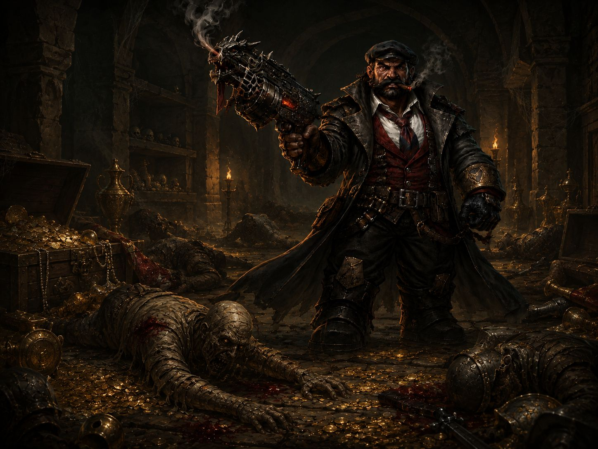

Precisão e dano
Fumaça, pólvora e culpa
Dorgrim aprendeu cedo a desmontar, mirar e disparar. O mesmo talento que o tornou um competidor temido em Rhul também o levou ao crime, e agora um barão quer sua relíquia de volta.
Background
Dorgrim Ferrotiro vivia em Rhul, o Reino dos Anões, e cresceu vendo seu pai trabalhar em uma pequena loja de armas de fogo na cidade.
Com o passar do tempo, o cheiro de fumaça e pólvora se tornou algo viciante para ele. Seu pai o ensinou a manusear, desmontar e atirar desde muito pequeno. Isso acabou se tornando um hobby, um que ele levou muito a sério... tornando-se um dos atiradores mais rápidos de sua cidade em competições de tiro ao alvo.
Seu único erro foi usar seu dom para o lado errado... A loja de seu pai já não lucrava tanto quanto no passado por não ter armas tão modernas quanto outras lojas, o que fez com que ele e seu pai começassem a passar necessidades. Isso acabou o direcionando para o mundo do crime. Roubos durante a noite se tornaram sua especialidade, tão sorrateiro e silencioso quanto o vento... (Destreza 18).
Certa noite, ele adentrou uma das casas mais luxuosas que havia em Rhul. O que ele não sabia é que ela pertencia a um antigo barão que já tinha envolvimento no mundo do crime: Draufrar.
Dentro de um cofre, uma relíquia e muito ouro foram levados, mas na relíquia havia um tipo de magia específica, pois, no exato momento em que foi tocada, um alarme soou por toda a mansão...
Uma equipe de segurança e seus cães foram acionados no mesmo momento. Um pedaço de tecido foi deixado para trás nos portões com pontas afiadas...
Depois daquela noite, Dorgrim nunca mais teve paz, pois dizem que o amuleto roubado é raríssimo e somente as pessoas certas podem ter acesso a seu poder. Achar um comprador não seria fácil... então ele resolveu viajar para encontrar alguém que tivesse poder suficiente para isso...
Enquanto um grupo de caçadores particulares tenta rastreá-lo para o barão...
Em jogo
No ataque dos gobbers do pântano, Dorgrim marcou seu lugar no grupo com tiros certeiros e escolhas rápidas. Sua função é reduzir o caos antes que ele alcance os companheiros mais vulneráveis.